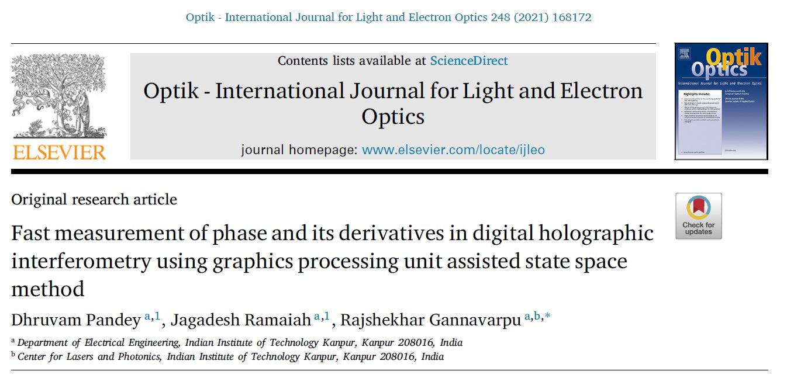

We propose a method for rapid and simultaneous estimation of interference phase and its derivatives in digital holographic interferometry. The method is based on graphics processing unit (GPU) assisted implementation of state space approach for interferogram processing and provides a massive improvement in computational efficiency over the conventional sequential approach. As a result, the proposed method offers feasibility for dynamic non-contact deformation metrology. We validate the method’s application potential in digital holographic interferometry for analyzing dynamic deformation of a test object.
Highlights
- Efficient implementation of state space approach for robust interferogram analysis in digital holographic interferometry.
- Massive gains in processing speed due to the graphics processing unit based computing.
- Strong practical application potential for dynamic deformation metrology.
Conference
1. Fringe pattern defect identification using Kalman filter and machine learning
In this article, we utilize the phase derivative computed using the state-space method to train
a machine learning model for detecting defects in noisy fringe patterns. We validated the
performance of the technique using simulations.
2. Displacement derivative analysis using deep learning in digital holographic interferometry
The article proposes a deep learning based method for estimating displacement derivatives
from noisy fringe patterns. The simulation results corroborate the performance of the proposed
method.